AudioLab Hardware Architecture
A TLV320AIC3104 audio codec daughterboard for STM32-based USB audio and DSP experiments.
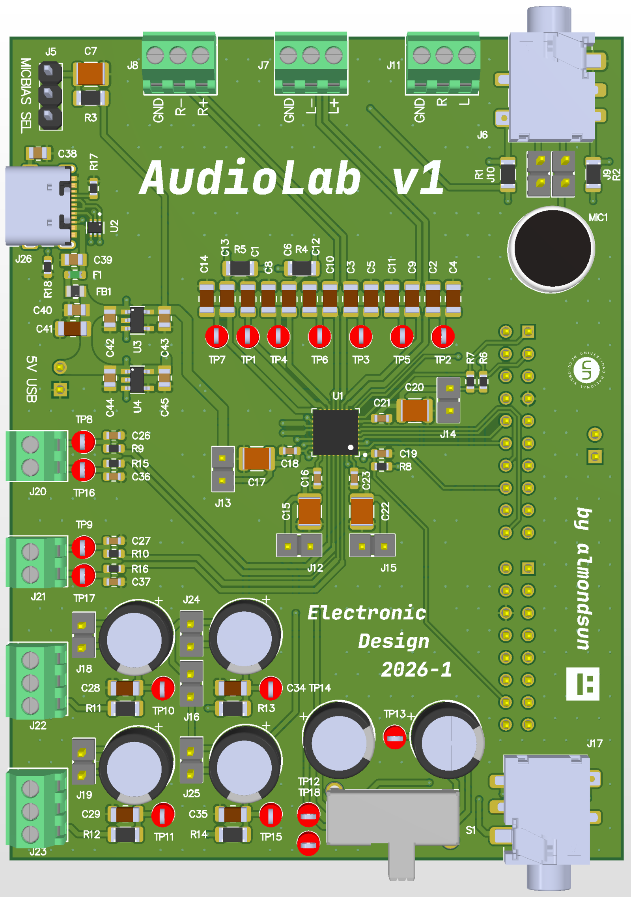
The board solves the mixed-signal part of the platform
- The STM32/Nucleo side owns USB, firmware control, sample transport, and DSP.
- The AudioLab board owns codec power, analog input/output, signal conditioning, and measurement access.
- The hardware is designed for lab bring-up: visible rails, exposed signals, DNP options, and test points.
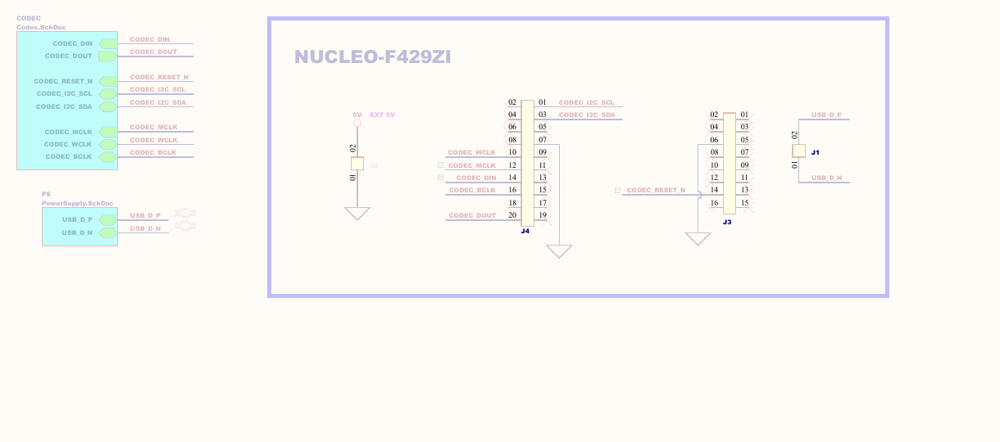
What is already finished
Design sources
- `AudioLab.PrjPcb`
- `audiolab.SchDoc`
- `codec.SchDoc`
- `PowerSupply.SchDoc`
- `AudioLab.PcbDoc`
Review exports
- `hardware/docs/schematics.pdf`
- `hardware/docs/pcb.pdf`
- `hardware/altium/pcb3d.step`
- Top and bottom board renders
Evidence trail
- `AudioLab.BomDoc`
- Codec datasheet
- Regulator datasheets
- Nucleo manual
- Connector and microphone references
Hardware architecture
Design decision: keep the STM32 controller board reusable while making a dedicated, inspectable codec daughterboard.
Why the TLV320AIC3104 is the center of the board
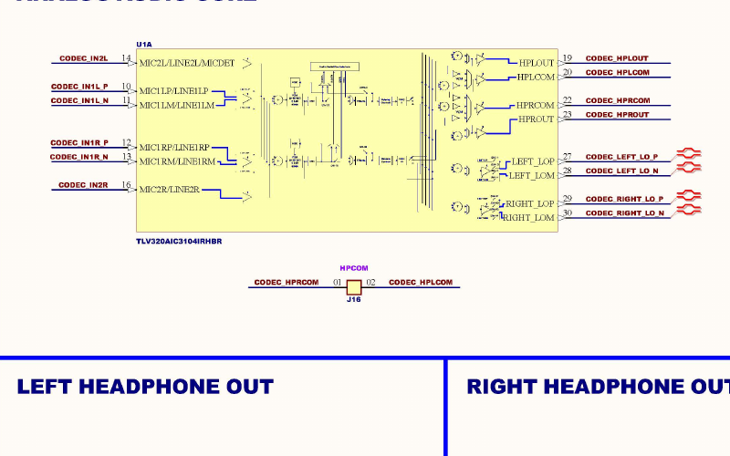
- Stereo ADC/DAC codec with configurable analog routing.
- I2C register control keeps firmware configuration explicit.
- Audio serial bus supports I2S-style PCM transport to the STM32.
- Headphone and line-output capability make the board useful for both measurement and listening.
Reference: `hardware/references/tlv320aic3104.pdf`; BOM part `TLV320AIC3104IRHBR`.
Voltage rails, current budget, and power dissipation
| Rail | Source | Main loads | Budget point |
|---|---|---|---|
| `5V` | USB-C VBUS through fuse/filter | LDO inputs, board input distribution | Must cover both downstream rails plus LDO losses. |
| `3V3` | TLV75533, 500 mA class LDO | Codec `AVDD`, `DRVDD`, `IOVDD`, pullups and support passives | Codec analog/driver/I/O currents are in the mA range by mode. |
| `1V8` | TLV70018, 200 mA class LDO | Codec `DVDD` digital core | Codec digital current is in the mA range for audio modes. |
For LDOs: `Pout = Vout x Iout`, `Pdiss ~= (Vin - Vout) x Iout`. The current budget must be verified during bring-up.
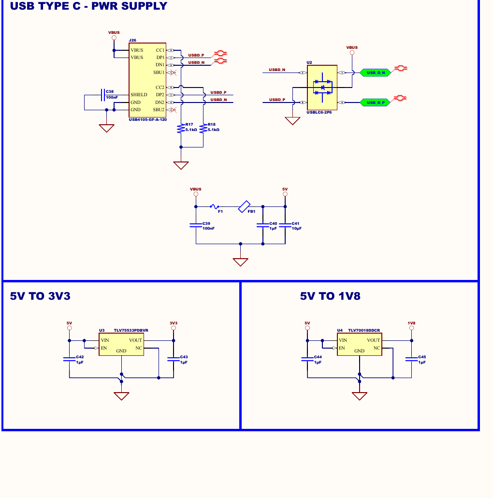
USB-C input, ESD, fuse, and filtering
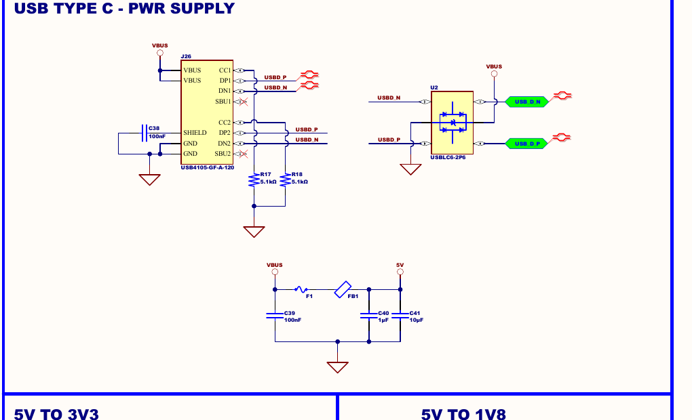
- `R17` and `R18` advertise a sink-facing USB-C power role through CC pull-downs.
- `U2` protects `USB_D_P` and `USB_D_N` against ESD events.
- `F1` and `FB1` protect and condition the 5 V input path before it becomes the board rail.
- `C39`, `C40`, and `C41` provide local high-frequency and bulk support for the input rail.
LDOs favor low noise and simplicity
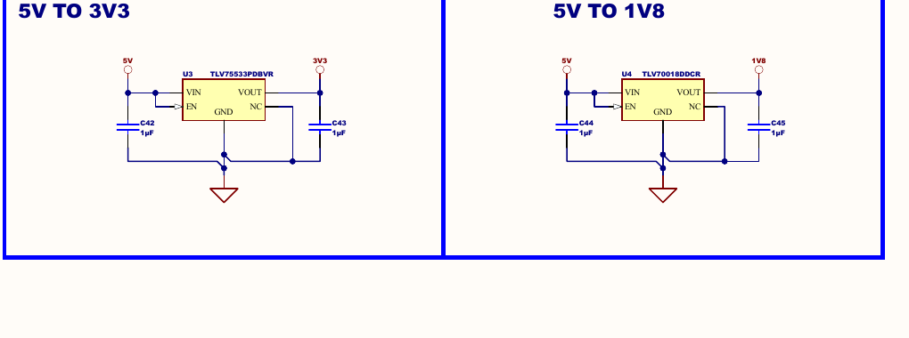
Supply domains are explicit at the codec
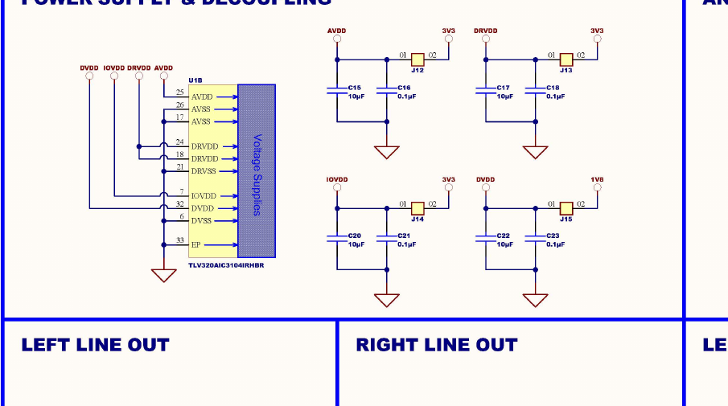
- `AVDD` and `DRVDD` sit on 3.3 V for analog and output drivers.
- `IOVDD` sits on 3.3 V to match STM32 I/O levels.
- `DVDD` sits on 1.8 V for the codec digital core.
- Local 10 μF and 0.1 μF capacitors reduce rail impedance near the codec pins.
I2C control and SAI/I2S audio are separated
- I2C: `CODEC_I2C_SCL`, `CODEC_I2C_SDA` with pull-ups to `IOVDD`.
- Reset: `CODEC_RESET_N` defaults safe through pull network and firmware control.
- Audio: `MCLK`, `BCLK`, `WCLK`, `DIN`, and `DOUT` form the PCM serial interface.
- Direction clarity matters: `DIN` and `DOUT` are named from the codec perspective.
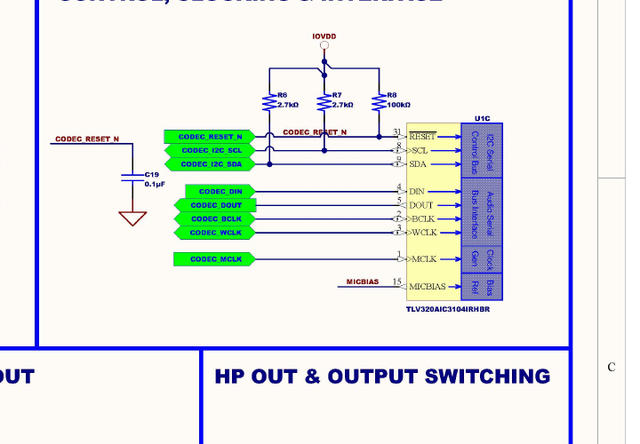
Input paths support line, external mic, and onboard mic experiments
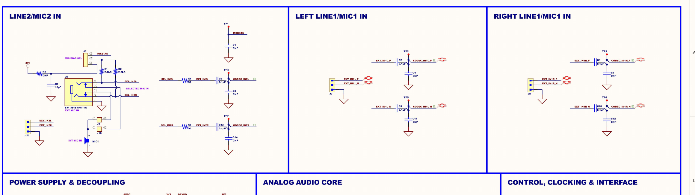
- Series capacitors AC-couple incoming signals into the codec input pins.
- DNP capacitors leave room to tune biasing, shunt filtering, or bandwidth after measurement.
- MICBIAS selection and the onboard electret microphone support microphone-mode demonstration.
The RC networks define the practical audio bandwidth
- Input AC coupling removes DC before the codec input path.
- Line-output RC networks preserve the audio band while reducing out-of-band noise.
- Headphone coupling capacitors set low-frequency response with the attached load.
- DNP parts are intentional tuning hooks for measured bandwidth.
100 Ω + 47 nF creates a post-codec low-pass pole
- Above the 20 kHz audio band.
- Useful for attenuating higher-frequency noise and measurement artifacts.
- Test points `TP8`, `TP9`, `TP16`, and `TP17` expose the filtered nodes.
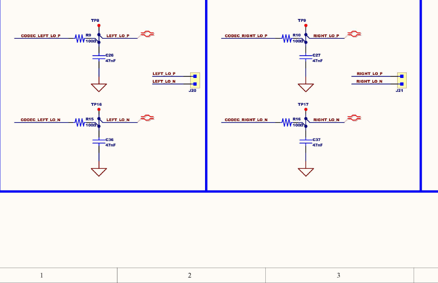
AC coupling and output switching shape the listening path
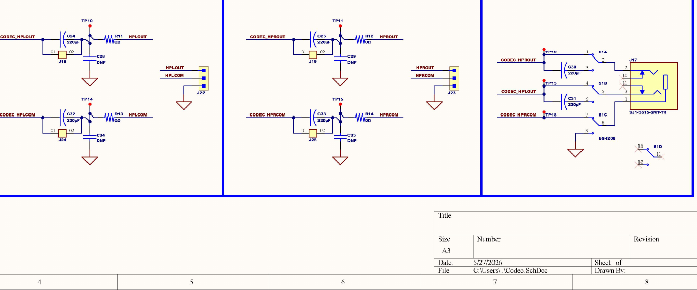
- The bass response is load-dependent.
- Large capacitors keep the corner frequency low enough for practical headphone use.
- The switch/jack path makes output routing demonstrable and inspectable.
The layout supports lab use and subsystem visibility
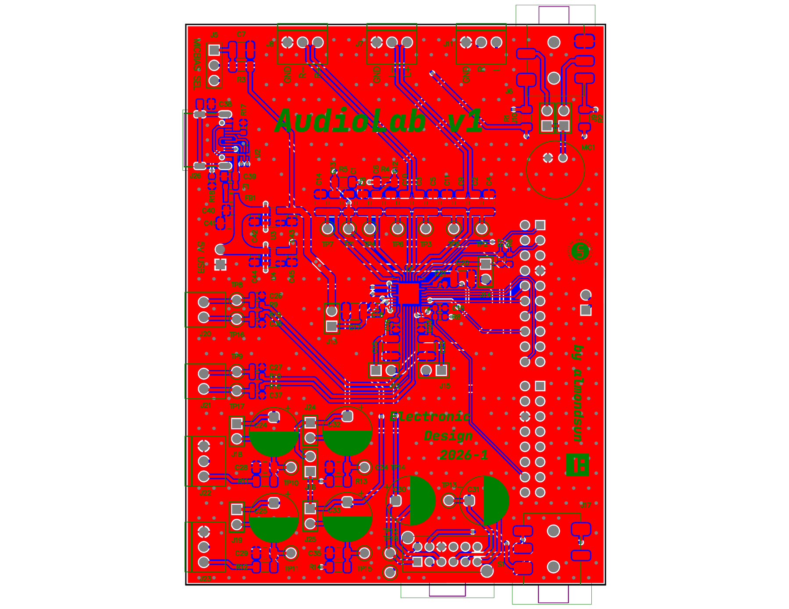
- Board connectors are placed for Nucleo integration and external access.
- Audio connectors and test points remain reachable for measurement.
- Power entry and codec support circuitry are separate functional regions.
- Reference images and STEP model support mechanical review.
BOM-driven hardware story
| Subsystem | Parts | Design role |
|---|---|---|
| Codec | TLV320AIC3104IRHBR | Audio ADC/DAC, routing, headphone/line output drivers, MICBIAS. |
| Power | TLV75533PDBVR, TLV70018DDCR, fuse, ferrite bead | Low-noise local rails and protected 5 V distribution. |
| USB | USB4105-GF-A-120, USBLC6-2P6 | USB-C physical entry and D+/D- ESD protection. |
| Analog I/O | SJ1-3515-SMT-TR, AOM-4544P-2-R, EG4208 | Audio jack, electret microphone, and selectable output path. |
| Measurement | Keystone 5000 test points, DNP footprints, 0 Ω links | Bring-up access, configurable paths, and measurement hooks. |
Source: `hardware/altium/project/AudioLab.BomDoc` and `hardware/references/`.
Why the hardware is defensible
Noise vs efficiency
- LDOs waste more power than buck regulators.
- For this codec board, low-noise simplicity is the better first revision choice.
Flexibility vs area
- DNP parts, 0 Ω links, and test points consume area.
- They make bring-up and bandwidth tuning far safer.
Architecture vs coupling
- Nucleo remains the controller and firmware platform.
- The daughterboard keeps mixed-signal responsibility local and reviewable.
How to validate the finished hardware
| Step | Check | Evidence |
|---|---|---|
| 1 | Visual inspection, shorts, connector orientation | Board photos, continuity checks |
| 2 | Apply current-limited 5 V | Input current and fuse/filter behavior |
| 3 | Measure `3V3` and `1V8` | Rail voltages and regulator temperature |
| 4 | Verify reset and I2C | Codec ACK, register read/write |
| 5 | Verify `MCLK`, `BCLK`, `WCLK` | Oscilloscope frequency and duty behavior |
| 6 | Measure analog bandwidth | Line/headphone response against RC design |
| 7 | Run playback/capture loopback | Audio path and noise measurements |
Primary sources used
Codec supplies, I2C control, serial audio bus, analog I/O, current examples.
3.3 V LDO capability, PSRR, dropout, capacitor guidance.
1.8 V LDO capability, PSRR, dropout, capacitor guidance.
NUCLEO-F429ZI connectors, 3.3 V I/O, USB OTG/device behavior.
USB-C connector and USB data-line protection context.
Mechanical and analog interface component context.
All files are under `hardware/references/`; component list is in `hardware/altium/project/AudioLab.BomDoc`.
AudioLab is ready as the hardware base for firmware and DSP
The finished design establishes the power rails, codec interface, analog bandwidth shaping, USB/protection path, PCB layout, and measurement hooks needed for the next phase.
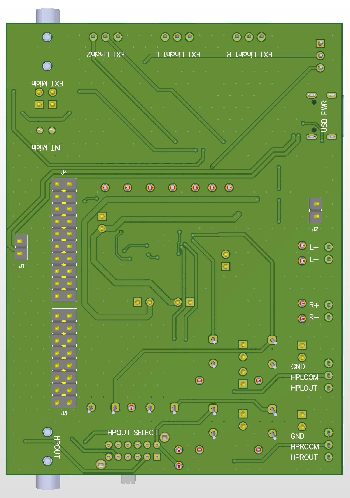